来源：知识星球「南半球聊财经」星主 Jason 不跪 当日发帖 当天发帖数量：20 条（含图片 43 张） 说明：所有时间为浏览器本地（美西）时区，对应北京时间约为当日凌晨到上午。本报告用于每日跟读、系统积累宏观与财经知识。
今日要点速览
今天 Jason 的 20 条帖子可以归成四条主线。第一条是中国财政与地方债：穆迪、华创、招商三家从不同角度指出，中国税收正越来越依赖"价格"（PPI 回升带动价税同步走高），而地方政府在土地出让收入塌陷后只能靠非税收入和转移支付勉强填坑，城投债增速虽放缓但存量仍在攀升。第二条是房地产的"存量时代"：克而瑞看东莞、国信达看全国租售比，共同的结论是二手房以价换量、租金远远跑输房价、深圳租售比低到 58 年才回本，房价对经济和财政形成持续下拉压力。第三条是金融市场与政策底：中金看港股 K 型分化、JPM 提出 A 股"政策看跌期权"（国家队 600 亿增持科技股托底）、摩根斯坦利用"自由流动性"指标警示 A 股难有全面牛市、财通和花旗分别看存款利率与美联储加息定价。第四条是地缘与全球格局：霍尔木兹海峡危机（汇丰的"绕开霍尔木兹"万亿资本开支、zerohedge 的特朗普考虑打伊朗、布伦特原油重回 100 美元）、美国对 60 个经济体加征 10–12.5% 关税、日元贬到 1986 年以来最弱、韩国名义 GDP 因半导体暴涨、以及 rabobank 的"从效率优先转向安全优先"和联合国人口见顶——串起来就是一个"安全优先、通胀黏性、全球化退潮"的新宏观范式。
逐帖解读
帖1 · 穆迪：中国财政"开源"能力有限，城市更新还要加杠杆 #TAX#
发布时间：2026-07-23 12:20
帖子原文（转写）
穆迪：债务持续扩张基本抵消了债务置换和利率下行带来的利息节约效应，使整体利息支出及利息负担占财政收入比例保持大致稳定。2025 年广义政府债务增长约 10%，而利息支出总体保持平稳。为弥补财政缺口，地方政府已着力扩大非税收入来源（如新增收费项目及附加费）。但此类收入来源有限，多为一次性收入，且若过度依赖，可能对经济运行造成扭曲。因此，政策层面预计将对相关措施加以约束，以防止形成不可持续的财政行为并避免对经济产生不利影响。中国在未来五年计划投入约人民币 5 万亿元用于城市更新，其中部分资金将通过专项债筹集，这将进一步推高地方财政支出及债务负担。公共服务领域的改革持续推进，包括公共服务均等化，也将带来更大的财政支出需求，尤其是在人口持续流入和老龄化加速的城市地区。
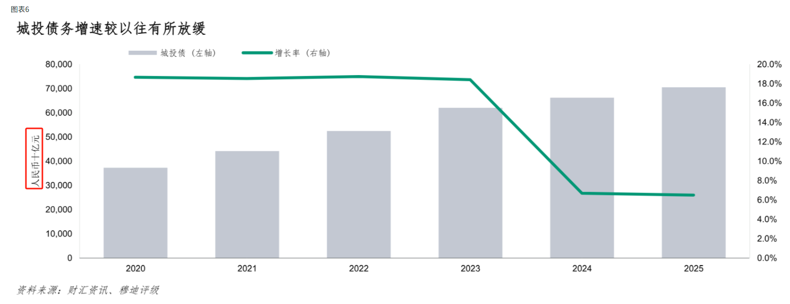
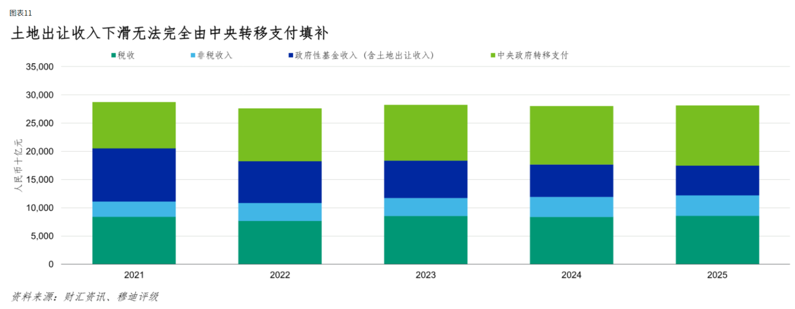
一句话核心 地方政府"钱不够花"的老问题没解，靠置换债省下的利息又被新增债务吃掉了，未来五年城市更新还要再借 5 万亿。
背景与关键数据 "广义政府债务"包括中央国债、地方一般债、专项债，再加上城投等隐性债务。穆迪的意思是：过去两年搞的"债务置换"（用低利率的政府债去替换高利率的城投债）本来能省利息，但因为债务总盘子还在以每年约 10% 的速度扩大，省下的利息又被新债的利息抵消了，所以"利息占财政收入的比例"基本没降。"非税收入"指罚款、行政收费、国有资源出让等，不像税收那样稳定，穆迪提醒这类收入"多为一次性"，靠它填缺口不可持续。
图片解读 第一张图（穆迪·图表6）：灰色柱是城投债存量（左轴，单位人民币十亿元），从 2020 年约 3.7 万（即 37 万亿）一路升到 2025 年约 7 万（70 万亿）；绿线是增速（右轴），2020–2023 一直稳在 18% 左右，2023 年之后急速掉到 6–7%。含义是——债务增速在踩刹车，但存量还在创新高，刹车只是让雪球滚得慢一点，雪球本身还在变大。第二张图（图表11）是分项堆叠柱：深蓝色的"政府性基金收入（含土地出让）"这一层从 2021 年明显变薄，说明卖地收入在缩水；绿色的"中央转移支付"顶层则基本没增厚——直观说明"土地财政的窟窿，中央转移支付并没有补上"。
为什么重要 地方财政是中国宏观最脆弱的一环。卖地收入塌了、非税收入又有限，意味着地方要么继续借债（推高杠杆和利息负担），要么压缩支出（拖累经济）。这解释了为什么市场对中国"大财政刺激"始终将信将疑——不是不想刺激，而是加杠杆的空间和意愿都在收窄。
延伸知识 "债务置换"就像把几张高利息的信用卡账单，合并成一笔低利息的银行贷款：月供轻了，但如果你还在不停刷新卡，总欠款并不会减少。真正的解药是"开源"（找到新的稳定收入）或"节流"（削减支出），而地方政府两头都难——这正是"化债"和"稳增长"之间的核心矛盾。
帖2 · 巴克莱：人民币升值没结束，但会"慢下来" #金融#
发布时间：2026-07-23 14:37
帖子原文（转写）
巴克莱：人民币在 5 月初升破 6.80，7 月 10 日中间价也被设定在 6.80 以下，创下 2023 年 2 月以来最强中间价。但此后人民币没有继续快速升值，而是进入横盘整理。我们的判断是，人民币中期升值趋势仍然存在，但升值速度将明显放慢。目前中国出口仍然具有韧性，所以人民币升值尚未构成严重问题。但随着国内需求进一步走弱，政策制定者更不能承受出口竞争力明显下降。美元反弹是人民币升值路径上的主要外部风险。境内市场此前对人民币升值较为乐观，但近期这种情绪已经有所弱化。维持 2026 年底 USDCNY 6.65 的预测，略强于远期市场定价。
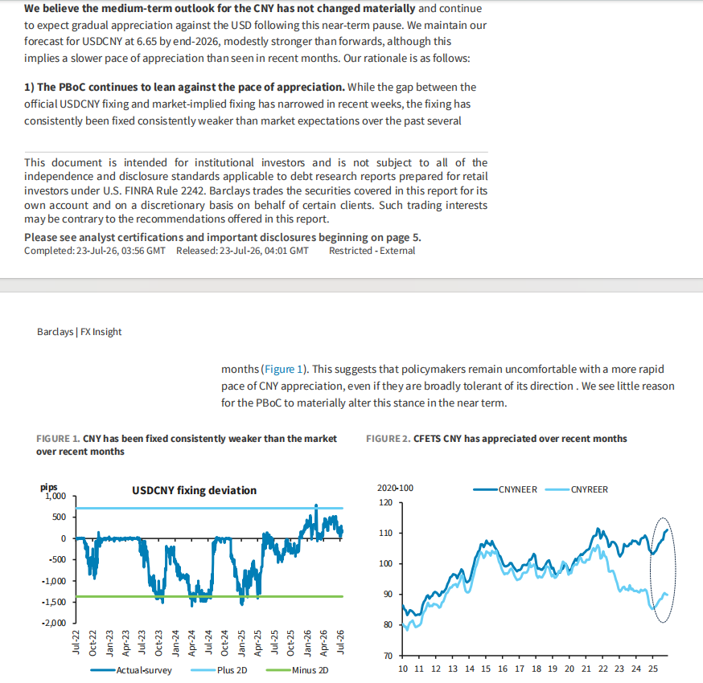
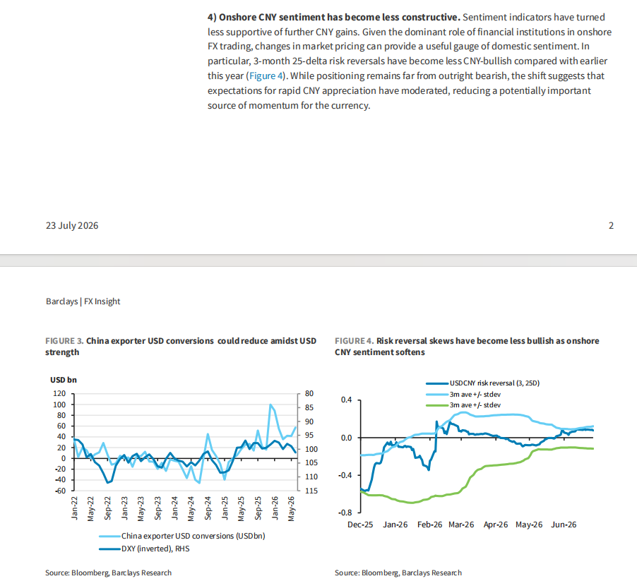
一句话核心 人民币还会慢慢升值，但央行不希望它升太快、伤到出口，年底目标 6.65。
背景与关键数据 USDCNY 是"1 美元兑多少人民币"，数字越小人民币越强。升破 6.80 意味着人民币走强。"中间价"是央行每天开盘前公布的官方参考汇率，市场只能在其上下一定区间波动，所以中间价是央行表达意图的重要工具。巴克莱观察到：官方中间价一直被设定得"比市场预期更弱"（图1 的 USDCNY fixing deviation 常年在 0 轴下方甚至到 -1500 点），说明央行在刻意压制升值速度——认可方向，但不希望太快。
图片解读 图1（Barclays 图1）纵轴是"官方中间价 − 市场隐含中间价"的点差（pips），深蓝线大部分时间在负区间，代表官方定价系统性地弱于市场；图2（CFETS 人民币指数）显示人民币对一篮子货币（不只是美元）近几个月在走强，最右端有一个明显的上翘后回落。两图合起来：人民币对一篮子在升值，但央行用中间价踩刹车。
为什么重要 汇率是"出口竞争力"和"资本吸引力"之间的跷跷板。人民币升值利好进口和以人民币计价的资产（外资更愿意进），但不利出口。当前中国内需弱、要靠出口撑经济，所以央行宁可让升值"慢炖"。对投资者来说，6.65 的年底预测意味着人民币资产仍有温和的汇兑收益预期，但别指望快速升值行情。
延伸知识 "中间价"机制是理解人民币的钥匙。它不是完全自由浮动，也不是完全固定，而是"有管理的浮动"。当央行想传递"别赌单边升值/贬值"的信号时，就会把中间价设在偏离市场预期的方向——这被称为"逆周期因子"的思路，本质是给市场情绪降温。
帖3 · 中金：公募减持港股，港股的弱是"信用周期 K 型分化"的镜像 #股市#
发布时间：2026-07-23 14:43
帖子原文（转写）
中金：从持仓情况上看，公募 2Q26 主动减持港股，持仓占比已低于 2Q24 时水平，占南向整体比例也有所下降。**回顾 2026 年上半年，港股的弱势与分化，本质上是信用周期 K 型分化的直接映射：**科技和外需强劲、信用持续扩张的同时，居民信贷脉冲已回到"9·24"之前；叠加南向降温、外资分流与美联储紧缩担忧带来的资金面"紧平衡"，港股整体表现明显落后。短期或有积极因素，但需要强调的是，仅靠低估值难以走出持续反弹，港股要真正走出底部，还需要更强的催化剂：要么是类似"9·24 时刻"的财政发力，要么是类似"DeepSeek 时刻"的科技突破。
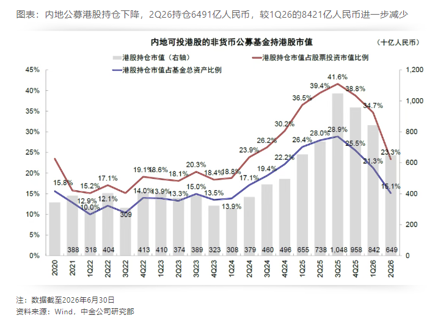
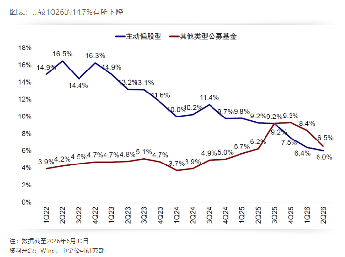
一句话核心 内地基金在卖港股，港股要真涨，得等到"大财政"或"大科技突破"这种级别的催化剂。
背景与关键数据 "公募 2Q26 主动减持"指内地公募基金在 2026 年二季度降低了港股仓位。"南向"指通过港股通从内地南下买港股的资金。"K 型分化"是形象说法：经济像字母 K，一撇向上（科技、外需强），一捺向下（居民、内需弱），两头背离。"信贷脉冲"衡量新增信贷相对经济的变化速度——居民信贷脉冲回到"9·24"（2024 年 9 月 24 日一揽子刺激政策）之前，说明老百姓又不借钱、不买房了。
图片解读 图中灰柱是内地公募的港股持仓市值（右轴，十亿元），从 2025 年 3 季度高点约 1048（十亿）回落到 2026 年 2 季度的 649；红线（占股票投资市值比例）从 41.6% 的峰值一路降到 23.3%；蓝线（占基金总资产比例）也从 28.9% 降到 15.1%。三条线同步下行，非常直观地说明"内地资金正在撤出港股"。
为什么重要 港股同时受"内地基本面 + 外资流动性"两头夹击。内地资金撤、外资又因美联储偏紧而分流，港股就成了"估值很便宜但没人买"的状态。中金点破关键：便宜本身不是催化剂。这对判断港股何时见底很有指导意义——盯的不是估值多低，而是有没有出现"9·24 级别的财政"或"DeepSeek 级别的科技叙事"。
延伸知识 "低估值陷阱"（value trap）是投资里的经典坑：一个东西看起来便宜，是因为它的基本面还在恶化，便宜只会更便宜。走出价值陷阱通常需要"叙事反转"——要么盈利拐点，要么政策/技术带来新的想象空间。中金说的两个"时刻"，正是两种叙事反转的模板。
帖4 · 花旗：市场"30% 加息概率"其实是风险溢价，不是真预期 #金融#
发布时间：2026-07-23 14:53
帖子原文（转写）
花旗：近期油价上涨，加上美联储官员没有像过去那样明确引导市场，使利率市场一度定价：下周美联储加息概率约 30%；到 2027 年 3 月，累计加息幅度超过 50 个基点。但彭博调查的 70 位经济学家中，没有一人预计下周加息。我们接触的投资者也几乎一致认为美联储将维持利率不变。这两个结果并不矛盾。市场定价中的"30%"，不应简单理解为：投资者真的相信下周加息的主观概率就是 30%。更准确的理解是：利率价格中既包含加息概率，也包含投资者为承担政策意外风险而要求的"风险溢价"。历史上，这种风险溢价非常小，通常只有约 1—2 个基点。由于美联储缺乏清晰的会前指引，投资者不知道会议上是否会突然出现政策变化，因此要求更高收益率作为补偿。结果就是，市场隐含利率高于投资者真正认为最可能出现的政策利率。
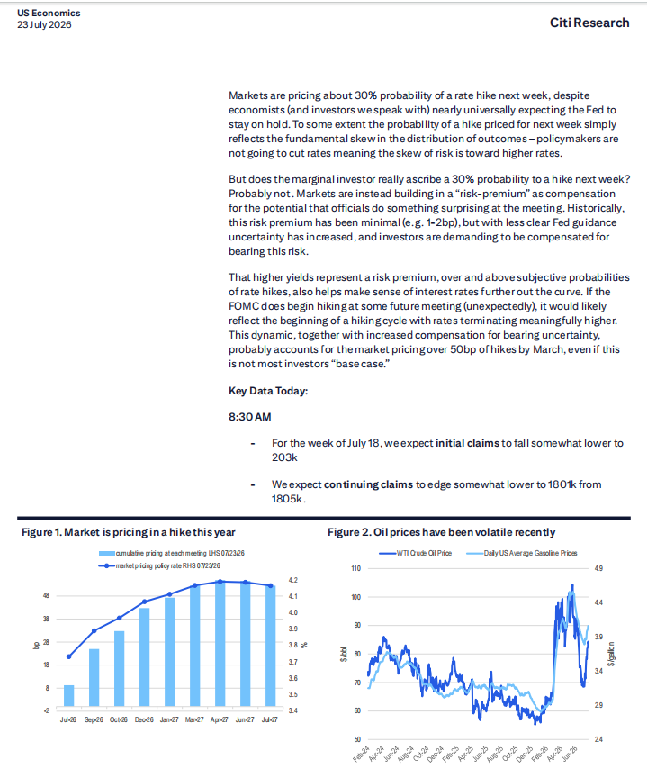
一句话核心 别被"市场定价 30% 加息"吓到，那更多是投资者要的"惊吓补偿费"，不是他们真觉得会加息。
背景与关键数据 "市场隐含概率"是从利率期货价格反推出来的加息/降息概率。花旗提醒它和"主观预期"不是一回事：当美联储不给清晰指引时，投资者会因为"怕开会有意外"而多要一点收益率作为保险，这部分叫风险溢价。历史上这个溢价只有 1–2 个基点，但眼下因为油价涨、美联储又"沉默"，溢价被放大，于是期货价格算出来的"加息概率"虚高到 30%，而真人调查（70 位经济学家无一人预期加息）才是真实预期。
图片解读 配图为花旗研报截图，展示利率市场对未来会议路径的定价曲线。要点不在具体线形，而在花旗的核心论断：价格里的概率 ≠ 人心里的概率，中间差的那块就是风险溢价。
为什么重要 这是一堂关于"如何读市场定价"的重要课。很多人看到"市场定价 X% 加息"就当成共识预期去交易，其实价格里混着风险溢价、流动性溢价等噪音。理解这一点，能避免在美联储会议前被虚高的隐含概率误导。
延伸知识 "风险溢价"无处不在：股票的预期回报比国债高，多出来的部分就是股权风险溢价；企业债利率比国债高，多出来的是信用风险溢价。金融资产的价格 = 无风险预期 + 各种风险溢价。学会把"价格"拆成"预期"和"溢价"两块，是从业余走向专业的分水岭。
帖5 · 财通：小行降存款利率≠降息，但利率下行是大势 #金融#
发布时间：2026-07-23 15:00
帖子原文（转写）
财通：本次的小型银行调降存款利率并不意味着降息，没有政策利率信号。不过基于过往经验利率横久易下，当前市场情绪始终被压抑，利空又迟迟不来，利率下行或是大势所趋。只要银行净息差承压，那么存款利率下调就难结束，剪刀差走阔意味着资金活化程度低、存款加速定期化，负债成本因此刚性化，而调降的目标不只是降低银行负债端的当期成本，更是阻断存款长期化对未来成本的锁定。在融资需求萎缩的情况下更顺应市场趋势，后续也有利于债市利率下行。
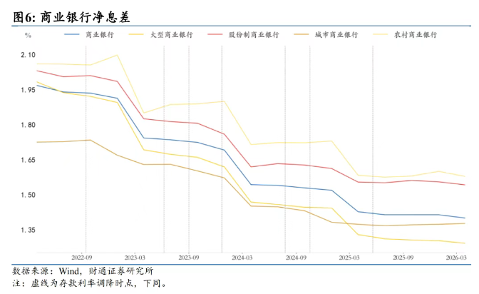
一句话核心 小银行降存款利率是"自救"（保住息差），不是央行降息，但整体利率往下走的趋势没变，利好债市。
背景与关键数据 "净息差"= 银行放贷收到的利息 − 付给储户的利息，是银行的核心利润来源。当贷款需求弱、贷款利率下行，而存款又"定期化"（大家把活期转成利息更高的定期），银行的息差就被两头挤压。所以银行主动下调存款利率是为了保住息差，属于商业行为，不代表央行政策利率（如 LPR、MLF）动了。"存款定期化"和"资金活化程度低"说的是同一件事：钱都趴在定期存款里不流动、不消费不投资，经济活力弱。
图片解读 配图为财通研报图表，展示存款利率下调与银行净息差走势。核心信号是息差持续承压——只要息差不修复，存款利率的下调就"难结束"。
为什么重要 这条帮你区分两种"降利率"：一种是央行主动的政策降息（强信号，影响全局），一种是银行被动的存款利率下调（弱信号，自救为主）。前者是"放水"，后者是"节流"。搞混了就会误判货币政策方向。结论对债市偏利好：利率长期向下，债券价格向上。
延伸知识 利率和债券价格是"跷跷板"：利率下行，存量债券（票息固定）就更值钱。"利率横久易下"是市场老话——利率在高位横盘久了，往往向下突破，因为经济基本面通常压着利率往下走。这也是为什么"利空迟迟不来"反而被解读成利多的原因。
帖6 · 一线反馈：中年失业后的社保诉求 #TAX#
发布时间：2026-07-23 15:04
帖子原文（转写）
看到个帖子，反馈中年失业后的社保诉求。
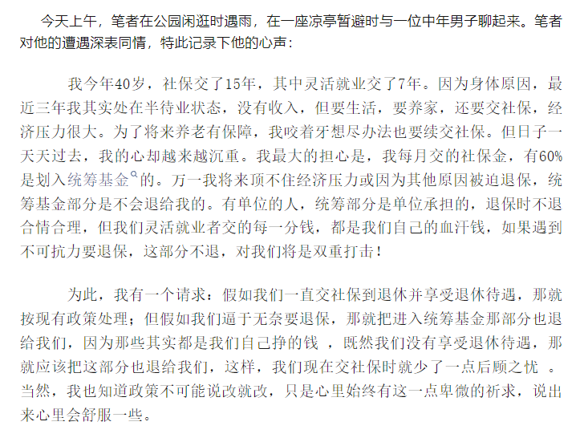
一句话核心 Jason 转发一条真实的民间声音——中年失业者面对社保缴纳的现实困境。
背景与关键数据 这类"一线反馈"是 Jason 惯用的手法：在冷冰冰的宏观数据之外，贴一条具体的人的处境，让宏观"落地"。中年失业后，社保（尤其养老、医保）的持续缴纳成为沉重负担——断缴影响未来养老金和医保待遇，续缴又缺乏收入来源，这正是就业市场走弱在个体层面的投影。
图片解读 配图为网友原帖截图，内容围绕中年失业后社保如何维系的诉求。它是前面几条"消费税同比下滑、消费疲软"等宏观数据的微观注脚。
为什么重要 宏观数据（消费弱、税收降）和微观处境（中年失业、社保压力）是一体两面。把两者对照着读，能更真切地理解"内需为什么弱"——不是不想消费，而是收入预期和安全感在下降。
延伸知识 经济学里有"预防性储蓄"的概念：当人们对未来（失业、养老、医疗）感到不确定时，会倾向于多存钱、少消费。这正是当前中国内需疲软的深层原因之一——修复内需，本质上要修复的是"安全感"和"收入预期"，而不只是发消费券。
帖7 · 招商：消费税跌、印花税暴涨——一冷一热的税收结构 #TAX#
发布时间：2026-07-23 15:08
帖子原文（转写）
招商：6 月国内消费税同比增速为 -5.3%，说明消费疲软；印花税同比增长 96.4%，其中证券交易印花税同比增长 145.3%，反映证券市场交易高度活跃，并且还间接帮助了个税的提高。
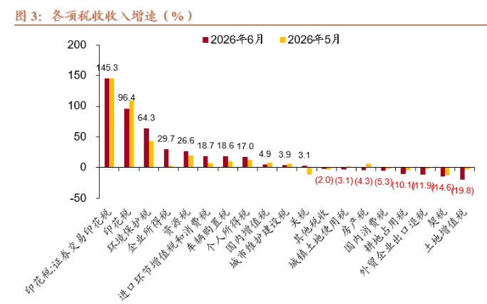
一句话核心 老百姓消费在降温（消费税 -5.3%），但股市交易火爆（证券交易印花税 +145.3%）——实体冷、金融热。
背景与关键数据 "消费税"主要对烟、酒、成品油、汽车等特定商品征收，它同比 -5.3% 直接反映这些商品消费在萎缩。"证券交易印花税"按股票成交额征收（目前单边 0.05%），它同比 +145.3% 意味着股市成交额同比暴增了 1 倍多——市场交投极其活跃。"间接帮助个税"是因为交易活跃、赚钱效应带动相关从业者和投资者收入。
图片解读 配图为招商研报的税收分项同比柱状图，一眼看去"消费相关税种"往下、"证券交易相关税种"高高冲上，形成鲜明的一降一升对比。
为什么重要 这是"资金脱实向虚"的一个侧面证据：实体消费在收缩，资金却涌进股市。它和帖17（政策看跌期权、国家队增持科技股）、帖14（自由流动性）能串起来读——当实体回报率低、政策又托底股市时，钱自然往金融资产跑。对投资者是提示：本轮行情有明显的"存量资金博弈 + 政策驱动"特征。
延伸知识 税收是观察经济结构的"高频探针"，因为它按真实交易实时征收，很难造假。看消费税判断消费、看印花税判断股市活跃度、看增值税判断生产、看关税判断外贸——学会用税收分项交叉验证宏观叙事，是很实用的技能。
帖8 · 花旗：韩国名义 GDP 增速上调到 20.7%，半导体的魔力 #其他国家经济#
发布时间：2026-07-23 15:11
帖子原文（转写）
花旗：我们把韩国 2026 年名义 GDP 增速预测从 15.5% 大幅上调至 20.7%，如果实现，将是 1991 年以来最快增速。因为半导体出口价格暴涨，显著推高 GDP 平减指数、贸易条件和名义收入。预计韩国 7 月 CPI 为 2.7%，但 8 月总体 CPI 可能反弹至 3.2%，核心 CPI 升至 3.3%，进一步支持韩国央行加息。
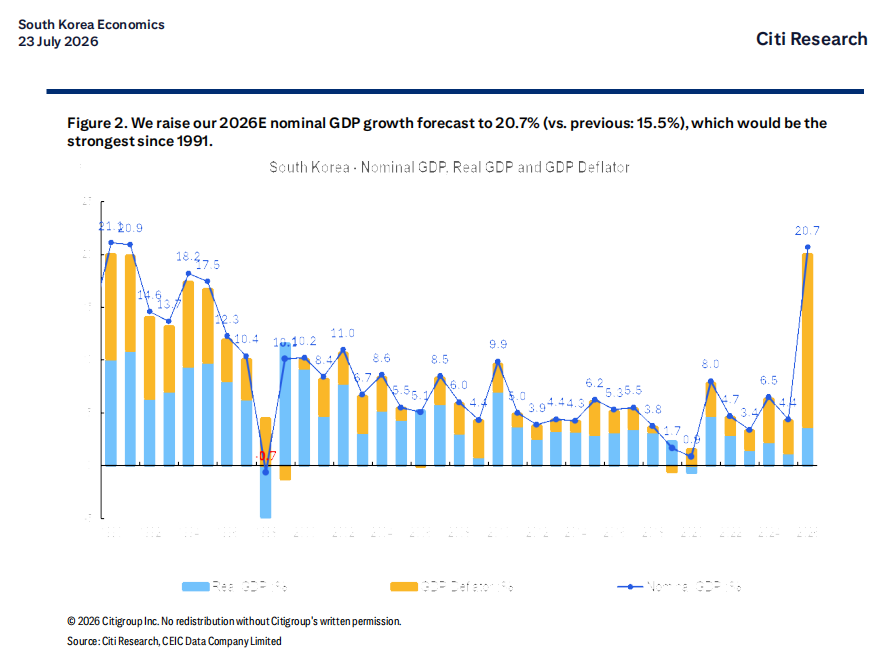
一句话核心 半导体出口涨价，把韩国的"名义 GDP"吹到 1991 年以来最快——但这更多是"价格"的功劳，不全是"产量"。
背景与关键数据 关键要分清"名义 GDP"和"实际 GDP"。名义 GDP = 产量 × 价格，实际 GDP 只算产量（剔除涨价）。两者之差就是"GDP 平减指数"（衡量整体物价）。花旗把韩国名义 GDP 增速从 15.5% 上调到 20.7%，主因不是韩国生产了多得多的芯片，而是芯片价格暴涨，让同样的出口卖出了更多的钱——"贸易条件"（出口价/进口价）改善，名义收入随之膨胀。CPI 8 月可能反弹到 3.2%，所以花旗认为韩国央行会加息（注意方向：是加息不是降息）。
图片解读 配图为花旗研报图表，展示韩国半导体出口价格与名义 GDP/平减指数的联动——出口价格线陡峭上行，带动名义指标同步走高。
为什么重要 韩国是全球半导体和科技周期的"晴雨表"。半导体价格暴涨，既印证了当前 AI 驱动的存储/芯片超级周期，也提示这轮涨价对韩国是"贸易条件红利"。同时"央行要加息"和帖15（美债收益率飙升）、帖16（日元贬值、欧央行或加息）呼应——全球正从"降息周期"转向"通胀黏性、利率偏高"的环境。
延伸知识 "贸易条件"（terms of trade）= 出口价格 ÷ 进口价格。它改善意味着"卖同样的东西能换回更多进口品"，是实打实的国民收入增益。产油国油价涨、芯片国芯片涨，都是贸易条件红利的典型。反过来，如果一国出口品跌价、进口品（如原油）涨价，贸易条件恶化，国民财富就被"转移"到海外。
帖9 · 华创：中国 80% 的税靠"价格"，PPI 一回升税收就旺 #TAX#
发布时间：2026-07-23 15:17
帖子原文（转写）
华创：我国约 80% 的税收为价格相关税，6 月，价格相关税拉动税收收入增速 8.7 个百分点，（输入性通胀）PPI 修复尽管不均匀，但对于税收有很大助力。
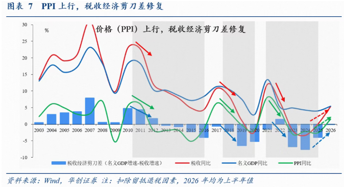
一句话核心 中国税收大部分是按"金额"征的（增值税、消费税等），所以只要物价（PPI）一涨，税收自然水涨船高——哪怕产量没增加。
背景与关键数据 "价格相关税"指增值税、消费税这类按销售金额征收的税——东西卖得贵，税就多，和卖了多少件关系没那么大。华创指出中国约 80% 的税是这一类，所以税收对物价极其敏感。"PPI"是工业品出厂价格指数，代表工厂端的物价。PPI 从通缩回升，等于给税收装了发动机：6 月价格相关税拉动税收增速 8.7 个百分点。"输入性通胀"指涨价部分有一些来自进口（如大宗商品、能源）涨价传导。
图片解读 图中蓝柱是"税收经济剪刀差"（名义 GDP 增速 − 税收增速），红线是税收同比，绿线是 PPI 同比。历史上三者高度同步——PPI（绿线）向上的年份，税收（红线）也旺，剪刀差（蓝柱）收窄。图的最右端（2024–2026）显示 PPI 触底回升，箭头指向税收和剪刀差的"修复"。
为什么重要 这条揭示了一个反直觉的机制：中国财政最盼的其实是"温和通胀"。因为税收靠价格，PPI 长期通缩会让财政收入枯竭，而 PPI 回升哪怕产量没起色，也能给财政"回血"。这也解释了政策为什么如此重视"反内卷、稳价格"——不仅关乎企业利润，更关乎财政命脉。它和帖1（财政困局）、帖7（税收结构）是同一主题的三块拼图。
延伸知识 这引出"通胀对政府是把双刃剑"：一方面通胀能增加名义税收、稀释存量债务的实际负担（政府是最大债务人，通胀等于变相减债）；另一方面通胀过高会伤民生、引发不满。对负债累累的经济体而言，"温和可控的通胀"往往是政策暗中偏好的方向——这被称为"通胀去杠杆"。
帖10 · 克而瑞：东莞人口增量全国第二，房子却连跌五年 #房价#
发布时间：2026-07-23 15:27
帖子原文（转写）
克而瑞：2025 年东莞常住人口净增 22.96 万人，增量居全国城市第二，但新房成交连续五年下滑，二手房"以价换量"价格较峰值累计下跌 40%；重要原因之一是城中村，据中国人民大学叶裕民团队 2023 年的研究，东莞的城中村数量达到 439 个，超过广州和深圳，涉及人口超过 500 万。制造业未反哺这些劳动力，也不能反哺房地产。
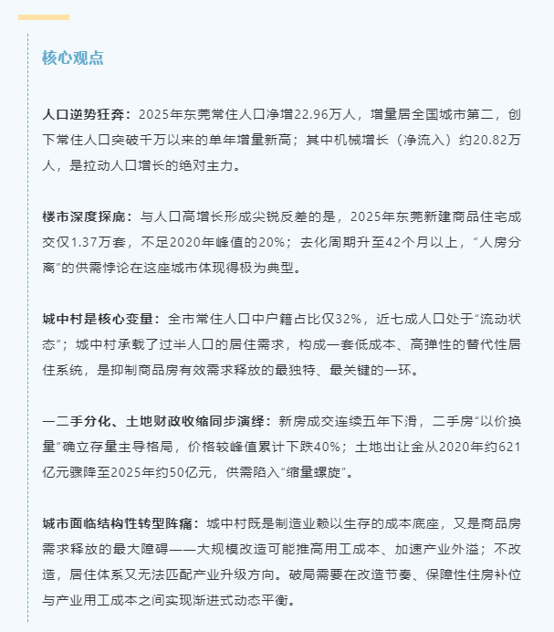
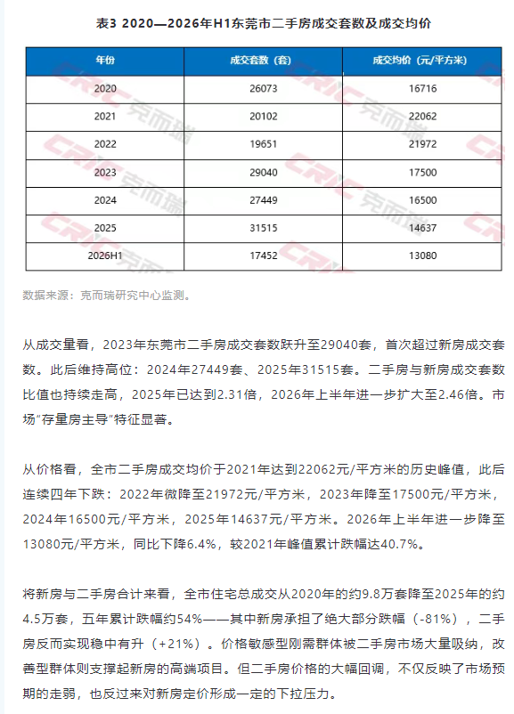
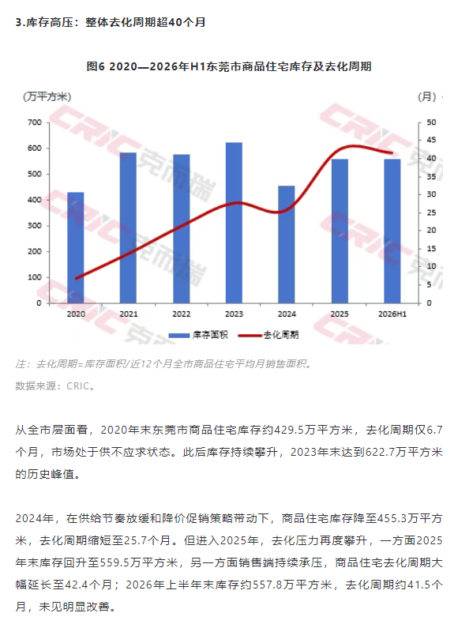
一句话核心 人口净流入全国第二的东莞，房价却跌了 40%——因为流入的是住城中村、买不起商品房的产业工人。
背景与关键数据 通常人们以为"人口流入 = 房价上涨"，东莞打破了这个直觉。原因是东莞有 439 个城中村、涉及 500 多万人，这些产业工人租住在城中村里，收入不足以支撑商品房。"以价换量"指开发商/业主靠降价来促成交易。二手房价格较峰值累计跌 40%，新房连跌五年。
图片解读 表格（表3）给出东莞二手房 2020–2026H1 的成交套数和均价：成交套数从 2020 年 2.6 万套升到 2025 年 3.15 万套（量在放大），但成交均价从 2021 年峰值 22062 元/㎡ 一路跌到 2026 上半年 13080 元/㎡，累计跌幅 40.7%——典型的"量升价跌、以价换量"。文字还点出：全市住宅总成交五年跌 54%，其中新房承担了绝大部分跌幅（-81%），二手房反而量增（+21%）。
为什么重要 东莞是"人口红利 ≠ 房价支撑"的活教材。它说明房价的真正支撑不是"人多"，而是"有购买力的人多"。这对判断各城市房地产前景是重要提醒：要看的不是常住人口数字，而是人口的收入结构和购买力。制造业城市尤其要警惕这种"人来了、钱不够"的结构性错配。
延伸知识 "城中村"是中国城市化的独特产物——农村集体土地被城市包围，形成低成本聚居区，为产业工人提供了廉价居住空间，客观上补贴了制造业的低工资。但它也意味着这部分人口游离在商品房市场之外。理解城中村，才能理解为什么"深圳/东莞人口很多但房价分化极大"。
帖11 · 汇丰：绕开霍尔木兹——GCC 的万亿"能源保险"资本开支 #金融#
发布时间：2026-07-23 15:32
帖子原文（转写）
汇丰：2026 年 2 月底霍尔木兹海峡事实上关闭，暴露出海湾合作委员会（GCC）能源出口体系的结构性弱点。沙特和阿联酋拥有陆上绕行管道，因此仍能转运部分原油；但科威特、卡塔尔和巴林缺乏可行替代路线，出口几乎完全停顿。这次冲击可能带来一个持续多年的结构性主题：GCC 国家将把绕开霍尔木兹海峡的管道、出口终端和储油设施，视为"能源保险"，并加快建设。我们估计 2026 年至今，GCC 已授予约 400 亿美元的油气工程项目；每增加 100 万桶/日的绕行管道能力，投资约需 50 亿—55 亿美元；若再建设 1000 万桶/日绕行能力，总投资可能超过 500 亿美元；即使沙特和阿联酋现有扩建全部完成，整体绕行能力也可能只有约 1000 万桶/日，仍不足危机前经霍尔木兹运输量的一半。我们还看到一项更具雄心的设想——Four Seas Initiative，四海倡议。其构想是：从海湾地区出发；穿过约旦和叙利亚；到达叙利亚地中海沿岸的巴尼亚斯；进一步连接里海、地中海和黑海；形成以叙利亚和土耳其为中心的陆上能源网络。沙特和土耳其也在讨论恢复一条经约旦和叙利亚的铁路连接。如果这类项目落地，可能改变整个中东能源和物流版图……从投资现实看，工程承包商、钢管制造商、储运企业和电气设备公司将是扩建改道主要受益者。
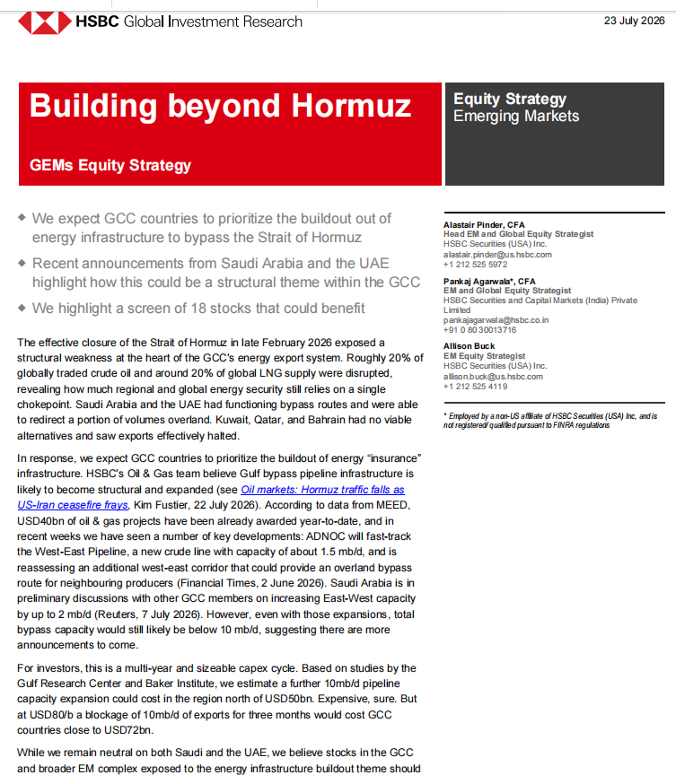
一句话核心 霍尔木兹一关，海湾国家吓出一身冷汗，未来要砸几百上千亿美元修"绕开霍尔木兹"的管道，这是一个多年期的资本开支主题。
背景与关键数据 霍尔木兹海峡是波斯湾唯一出海口，全球约 20% 的原油、20% 的 LNG 从这里走。2026 年 2 月它"事实上关闭"，让沙特、阿联酋（有陆上管道可绕行）勉强撑住，而科威特、卡塔尔、巴林（无替代路线）出口几乎断了。汇丰的投资逻辑：这会催生一轮"能源保险"式的基建投资——绕行管道每增 100 万桶/日要花 50–55 亿美元，建 1000 万桶/日绕行能力要 500 亿美元以上。"四海倡议"则是更宏大的设想，把海湾—约旦—叙利亚—地中海—黑海—里海连成陆上能源网。
图片解读 配图为汇丰研报《Building beyond Hormuz》封面页，副标题"GEMs Equity Strategy"，要点三条：GCC 将优先建设绕开霍尔木兹的能源基建；沙特和阿联酋的近期公告显示这是结构性主题；汇丰筛选了 18 只受益股。正文提到 ADNOC 将加速"西东管道"（约 150 万桶/日）、沙特在谈将东西向能力再增 200 万桶/日。
为什么重要 这条把"地缘冲突"转化成"投资主题"。地缘危机不只是风险，也重塑资本流向——工程承包、钢管、储运、电气设备成为受益链条。它和帖15（特朗普考虑打伊朗、布伦特重回 100 美元）是同一地缘背景的一体两面：一个讲危机本身，一个讲危机催生的长期资本开支。
延伸知识 "关键咽喉点"（chokepoint）是能源地缘政治的核心概念——霍尔木兹、马六甲、苏伊士、巴拿马运河，全球贸易高度依赖这几个瓶颈。任何一个出问题，都会引发油价飙升和供应链重构。当一个咽喉点被证明"不可靠"，各国就会不惜成本修"备份路线"——这正是"安全优先"逻辑（见帖19）在能源领域的具体落地。
帖12 · 国信达：租金远远跑输房价，深圳租售比垫底要 58 年回本 #房价#
发布时间：2026-07-23 15:39
帖子原文（转写）
国信达：当前二手房市场量价齐跌、观望气氛浓郁，市场信心的重建尚需时间，短期内企稳回升的支撑条件仍不充分。2015-2026.6 月，全国租金累计上涨 13.65%，远低于同期二手住宅房价 38.23% 的累计涨幅。整体来看，租赁需求仍具一定刚性，但市场供给持续充裕，租金缺乏上行支撑。租售比看，深圳租售比仅为 1.72%，在 40 城中垫底，低于其他一线城市水平，意味着仅靠出租需至少 58 年才可回本。
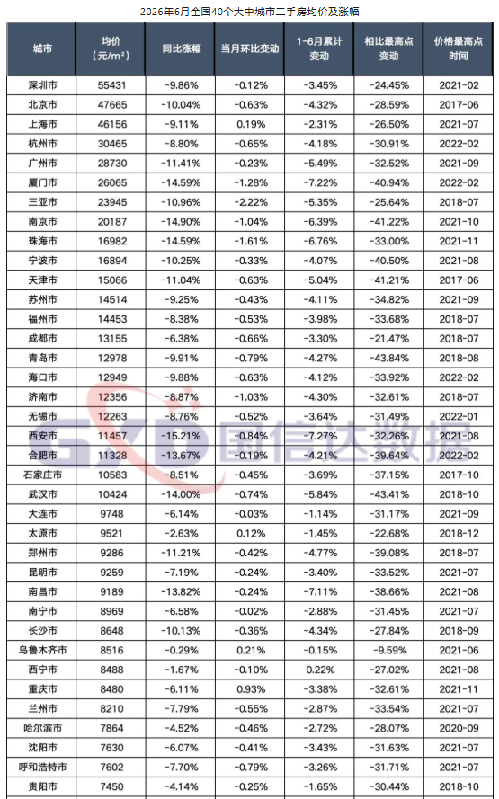
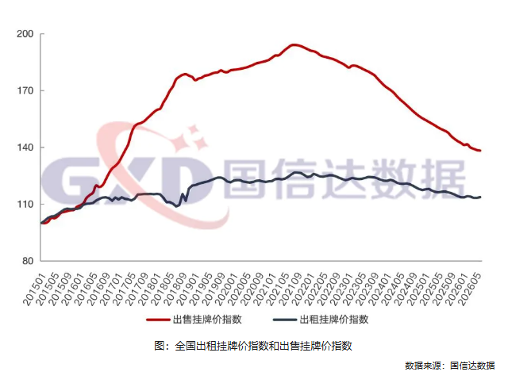
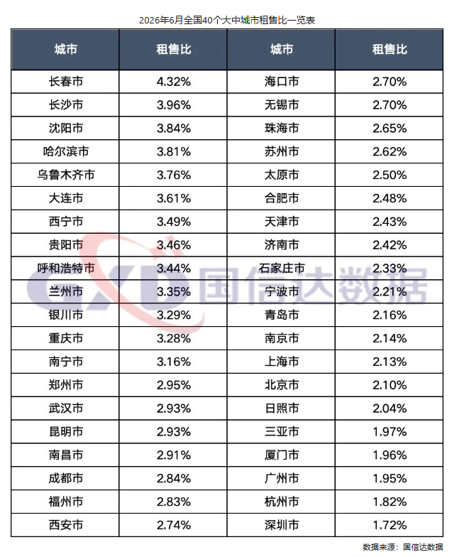
一句话核心 这十年房价涨了 38% 而租金只涨 13%，深圳买房只靠收租要 58 年才回本——房价严重脱离租金这个"锚"。
背景与关键数据 "租售比"= 年租金 ÷ 房价（或其倒数"售租比"= 房价 ÷ 年租金 = 回本年数）。深圳租售比 1.72%，倒过来就是约 58 年回本。国际上通常认为合理租售比在 3%–5%（即 20–33 年回本），1.72% 意味着深圳房价相对租金极度偏高。租金是房子的"内在价值"（真实使用价值），房价里超出租金支撑的部分，靠的是"涨价预期"。
图片解读 第一张图（挂牌价指数）：红线是出售挂牌价指数，2015 年起飙升、2021 年见顶约 195 后一路下跌到约 140；深蓝线是出租挂牌价指数，十年基本横在 110–120 之间。两条线的巨大剪刀差，直观说明"房价疯涨时租金没怎么涨，房价现在跌了还是远高于租金"。第二、三张表列出 2026 年 6 月全国 40 城租售比：长春最高 4.32%，往下海口、无锡 2.70%……一线城市集体垫底——北京 2.10%、上海 2.13%、广州 1.95%、深圳 1.72%（全国最低）。
为什么重要 租售比是判断房产泡沫的经典标尺。租金反映真实居住需求，房价则包含投机预期。当租售比极低（回本要 58 年），说明房价里"预期"的成分远大于"价值"的成分。一线城市租售比集体垫底，提示这些城市的房价对"预期反转"最敏感。对普通人这是重要的资产配置参考：靠租金回报持有一线房产，性价比已非常低。
延伸知识 租售比之于房产，类似"股息率/市盈率"之于股票。房价 ÷ 年租金 就是房子的"市盈率"，深圳的 58 倍 PE 放在股票市场里是极高估值。买入低租售比的房子，本质是在赌"未来还有人以更高价接盘"（资本利得），而不是赚"稳定的租金现金流"——一旦涨价预期消失，估值就会向租金这个"锚"回归。
帖13 · 彭博：美国对约 60 个经济体加征 10–12.5% 关税 #其他国家经济#
发布时间：2026-07-23 15:54
帖子原文（转写）
bloomberg：美国将对大多数主要贸易伙伴的进口征收 10% 至 12.5% 的关税，新征税源于对约 60 个经济体涉嫌未能防止供应链强制劳动、损害美国工人利益的调查。有经济体已经向特朗普申请特定豁免。加拿大则在努力避免 50% 关税。
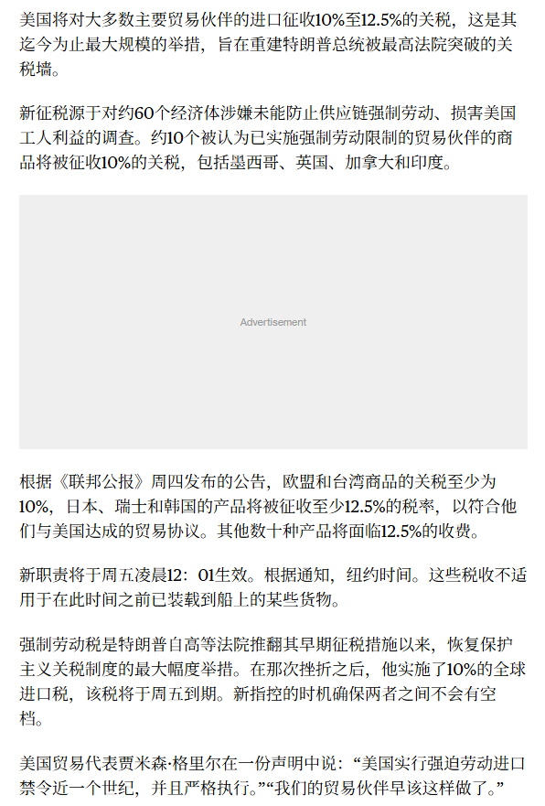
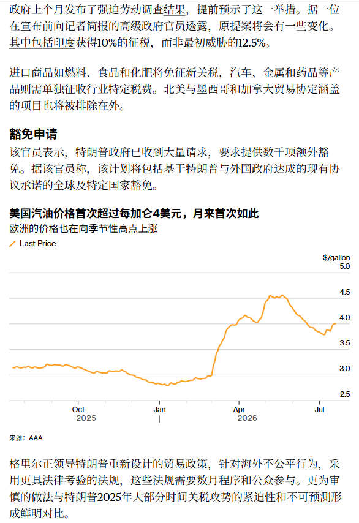
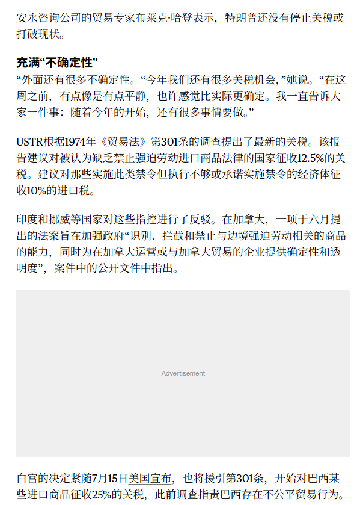
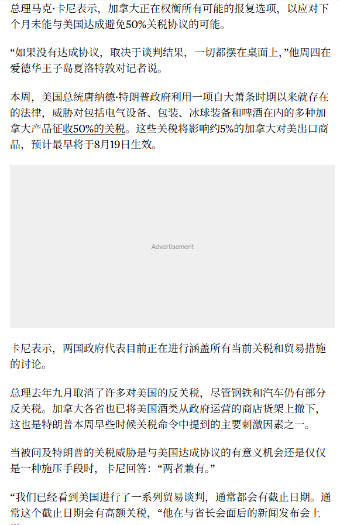
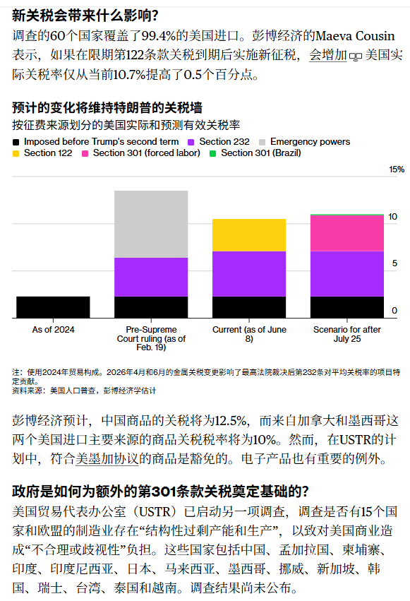
一句话核心 特朗普用"防止强制劳动"当理由，对约 60 个经济体普征 10–12.5% 关税——这是绕开最高法院限制、重建关税墙的最新招数。
背景与关键数据 此前特朗普的部分关税措施被美国最高法院驳回，这次他换了个法律依据——以"贸易伙伴未能防止供应链中的强制劳动、损害美国工人利益"为名重新开征。覆盖约 60 个经济体，税率 10–12.5%；欧盟和台湾商品至少 10%，日本、瑞士、韩国因已与美达成贸易协议被征至少 12.5%（注意：达成协议的反而更高，可能是协议里另有安排）。新规周五凌晨生效，已装船在途货物豁免。加拿大在努力避免更高的 50% 关税。
图片解读 五张图为彭博相关报道的连续截图，逐段展开：关税的法律新依据（强制劳动）、覆盖的约 60 个经济体范围、不同伙伴的具体税率、部分国家的豁免申请、以及加拿大面临的 50% 关税风险。
为什么重要 这是"全球化退潮、保护主义常态化"的又一个里程碑。关键不在具体税率，而在手法：当一条法律路径被堵，行政当局就换个名目继续。这意味着关税已从"谈判筹码"变成"结构性政策"，企业必须把它当长期成本来规划供应链。它和帖19（西方新重商主义、安全优先）是同一逻辑——用"安全/道德"名义重塑贸易格局。
延伸知识 "强制劳动"作为贸易武器并非新鲜事，美国早有相关进口禁令。但把它扩大成对 60 个经济体的普遍关税依据，是把"价值观/道德"工具化为"保护主义"手段。这类"以非经济理由行经济保护之实"的做法，会越来越多——这正是传统自由贸易理论"看不懂"的新现实（见帖19 rabobank 的论述）。
帖14 · 摩根斯坦利："自由流动性"降到新低，A 股难有全面牛市 #股市#
发布时间：2026-07-23 15:58
帖子原文（转写）
摩根斯坦利：中国自由流动性指标在 2026 年 6 月底降至 2025 年 5 月以来最低水平。造成下降的三个主要原因是：M1 增速低迷；PPI 同比增速较高；工业生产增速较强。自由流动性 = M1 同比增速 − PPI 同比增速 − 工业增加值同比增速。这个指标试图衡量货币增长在扣除实体经济生产和工业品价格所吸收的资金后，还剩多少"多余流动性"可以流向股票等金融资产。从 2003 年以来的历史可以看到，自由流动性与 MSCI 中国同比表现存在较明显的同向关系。自由流动性偏紧对中国股票的影响，不利于全面估值扩张。市场更可能资金集中于少数龙头；看重现金流和盈利确定性；估值扩张空间有限；行业轮动加快；大盘指数缺乏持续单边上涨。
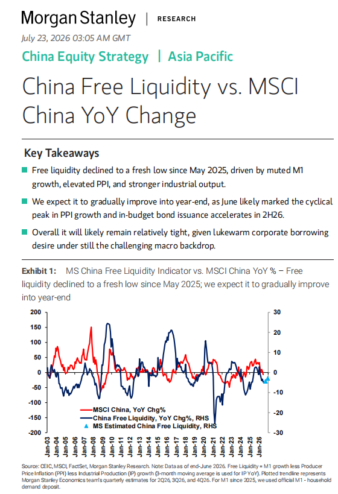
一句话核心 衡量"多余的钱能流进股市多少"的指标降到一年多来最低，摩根斯坦利据此判断 A 股是结构性行情（少数龙头），而非全面牛市。
背景与关键数据 摩根斯坦利自造了一个指标：自由流动性 = M1 增速 − PPI 增速 − 工业增加值增速。逻辑是——M1（狭义货币，主要是活期存款）代表经济里"活钱"的增长；但这些钱会先被实体经济（工业生产在扩张，需要占用资金）和涨价（PPI 高，同样的生产要更多钱周转）吸走，剩下的才是能流进股市的"多余流动性"。现在 M1 增速低、而 PPI 和工业生产都在走强，三项一减，"多余的钱"就变少了，创 2025 年 5 月以来新低。
图片解读 图中红线是 MSCI 中国指数同比（左轴），蓝线是自由流动性同比（右轴），时间跨度 2003–2026。两条线长期同向波动——自由流动性充裕时（蓝线高）股市往往涨（红线高），反之亦然。图最右端蓝色小三角标出当前自由流动性已落到低位，暗示对股市的估值扩张不利。
为什么重要 这条给当前 A 股行情"泼了盆冷水"，也提供了操作框架：在流动性偏紧时，钱会抱团在少数有确定盈利、有现金流的龙头，而不是雨露均沾地推动全面牛市；行业轮动会加快，大盘指数难持续单边上涨。它和帖17（政策看跌期权、国家队托底科技股）形成有趣的张力：一边是"流动性不支持全面牛市"，一边是"政策定向托底科技"——结论殊途同归：结构性行情（AI/科技/龙头）> 全面牛市。
延伸知识 M1 是理解中国流动性的核心指标。M1 主要是企业活期存款，反映企业"随时可动用的钱"——M1 增速高说明企业愿意把钱放在活期、准备投资或扩张（经济活跃）；M1 增速低说明钱都定期化、趴着不动（经济偏冷）。把 M1 和 PPI、工业增加值组合，就能大致判断"钱到底去了实体还是金融"，是很实用的宏观框架。
帖15 · zerohedge：特朗普考虑重启对伊朗大规模打击，布伦特重回 100 美元 #金融#
发布时间：2026-07-23 16:07
帖子原文（转写）
zerohedge：特朗普表示自己正在认真考虑重启对伊朗的大规模作战行动。布伦特原油周四已回升至每桶 100 美元大关。特朗普和沙特也在斡旋。特朗普周四在社交媒体上表示，"从现在起，任何对船舶、货物或相关事物造成的损害，都将由美国持有和控制的伊朗货币支付。"美股三大股指周四全线收低。油价上涨重新加剧市场对通胀的担忧，并推动美国国债收益率上升。10 年期国债收益率升破 4.7%，创 2025 年 1 月以来最高水平；两年期国债收益率升至 4.36% 以上，创 2025 年 2 月 12 日以来最高水平。股票指数期货显示澳大利亚、日本和韩国均有下跌。此外，欧洲央行行长克里斯蒂娜·拉加德表示为 9 月可能加息奠定了基础。
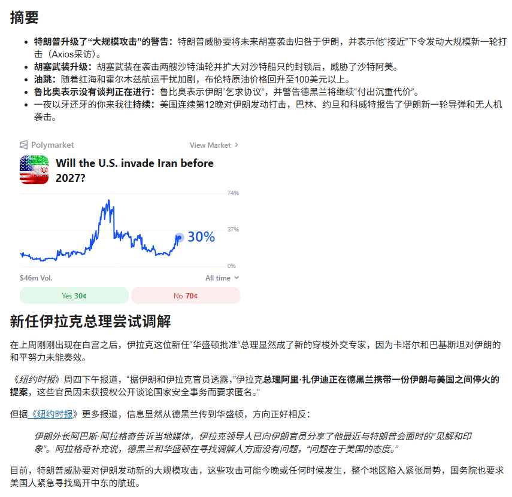
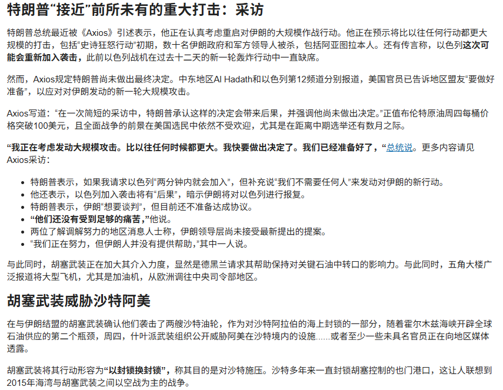
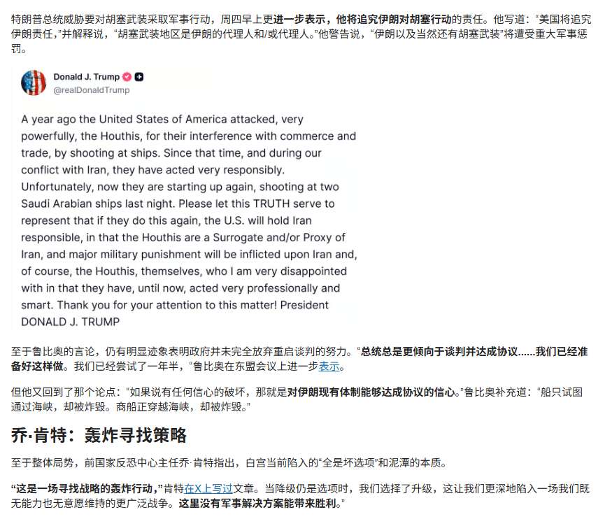
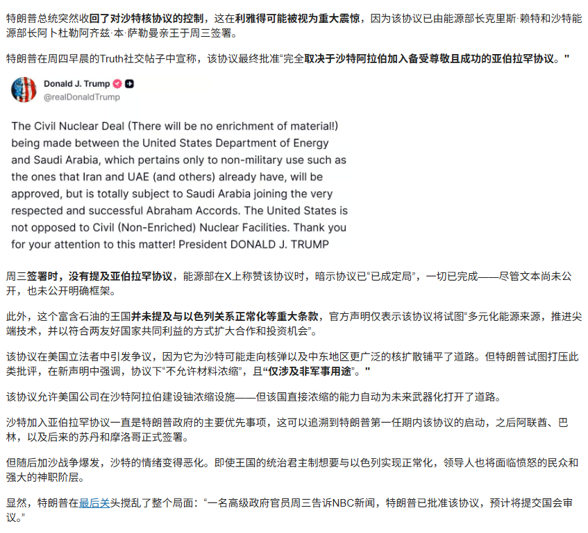
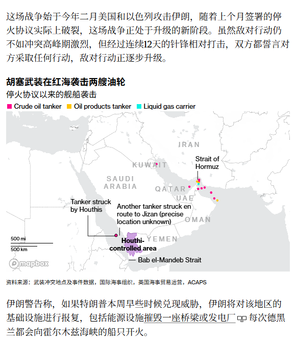
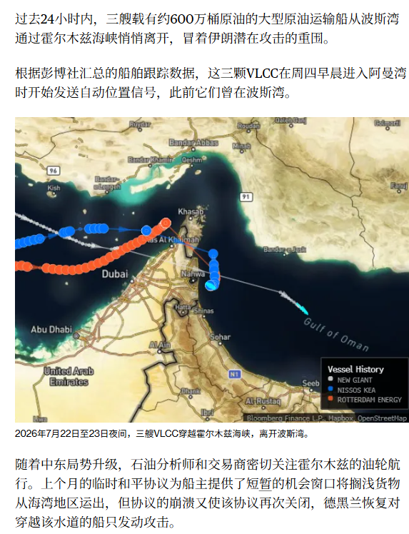
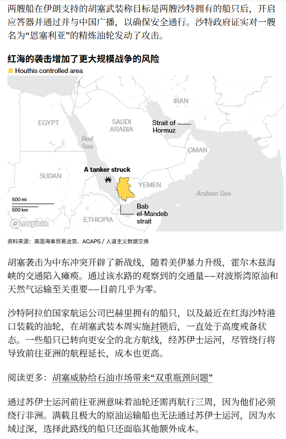
一句话核心 地缘火药桶（特朗普考虑打伊朗）+ 油价破 100 + 美债收益率飙升 = 通胀预期重燃、股市承压的组合拳。
背景与关键数据 布伦特原油重回 100 美元/桶（帖内另处提到今晨已达 95.5、基准裂解价差 68 美元）。油价上涨→通胀预期升温→美债收益率上行：10 年期破 4.7%（2025 年 1 月以来最高）、2 年期破 4.36%。"裂解价差"（crack spread）是原油炼成成品油的利润，价差走阔说明成品油紧张。Polymarket（预测市场）上"2027 年前美国是否入侵伊朗"的概率一度冲到 74%，最新回落到 30%。欧央行拉加德也为 9 月可能加息铺垫。
图片解读 八张图是这条新闻的多角度截图：图1 含 Polymarket"美国 2027 前入侵伊朗"概率曲线（最新 30%）；图2 是特朗普"接近"下令大规模打击的采访；图3 讲胡塞武装袭击沙特油轮、以"封锁换封锁"；图4 讲霍尔木兹之外红海也成能源瓶颈、布伦特达 95.5、裂解价差 68；后几张对应美债收益率上行、美股收低、欧央行加息铺垫。整组图勾勒出一条清晰的传导链：地缘升级 → 油价涨 → 通胀预期升 → 利率升 → 股票跌。
为什么重要 这是当前市场最大的"尾部风险"来源。它把多条线索串成一张网：油价（帖11 霍尔木兹）、利率（帖4 美联储、帖8 韩国加息、帖16 欧央行）、通胀黏性——共同指向一个"利率下不去、风险资产估值受压"的环境。对投资者而言，地缘 + 能源 + 利率是当下必须同时盯的三个变量。
延伸知识 "油价 → 通胀 → 利率 → 股市"是宏观里最经典的传导链之一。原油是几乎所有生产的上游成本，油价冲击会同时推高通胀（坏消息）和压低增长（需求被侵蚀），形成"滞胀"的雏形。滞胀是股债双杀的环境——这也是为什么每次中东局势紧张，全球资产都会紧张。历史上 1973、1979 两次石油危机都由地缘引发，殷鉴不远。
帖16 · 彭博：日元贬到 1986 年以来最弱，Topix 的美元回报被吃掉 #金融#
发布时间：2026-07-23 16:15
帖子原文（转写）
bloomberg：日本 Topix 指数今年上涨了 19%，创下历史新高。但以美元计，涨幅缩减至 14%，因为日元已走弱，超过 163 兑美元，为 1986 年以来最低水平，受持续利率差异和日本财政前景担忧影响。自高市去年十月赢得选举以来，海外资金净买入了超过 12 万亿日元（740 亿美元）的股权。可以肯定的是，日元走弱继续支持出口商的企业盈利。彭博估计显示，如果汇率保持在当前水平附近，日本主要汽车制造商将累计获得超过 9000 亿日元的额外利润。新加坡主权财富基金 GIC Pte 报告了十多年来最低的五年年化收益率，名义回报率从一年前的 6.1% 降至 3.6%。GIC 的大部分投资组合投资于新加坡以外地区。根据最新年度报告，美国依然是其最大的投资市场。虽然基金不再公开其在美洲的投资金额，但其 53% 的资产被分配到美洲，较 2024 年的 44% 有所上升。相比之下，GIC 亚太区持股同期从 28% 降至 22%。
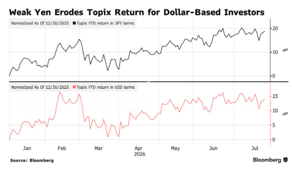
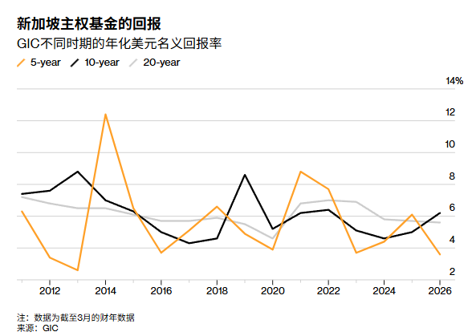
一句话核心 日本股市涨了 19% 看着风光，但日元贬到 40 年最低，换成美元只剩 14%——赚了指数、亏了汇率。
背景与关键数据 日元跌破 163 兑 1 美元，是 1986 年以来最弱。主因是"利率差异"（日本利率仍低，美国利率高，资金借便宜的日元去买高息美元资产，即"套息交易"，持续压低日元）和"日本财政前景担忧"。对本币投资者，Topix 涨 19%；但对美元投资者，日元贬值吃掉 5 个百分点，只剩 14%。日元弱的另一面是利好出口商——车企预计多赚 9000 亿日元。另外新加坡主权基金 GIC 五年年化名义回报从 6.1% 降到 3.6%（十多年最低），且把更多钱押在美洲（53%，上一年 44%），减配亚太（28%→22%）。
图片解读 图1 是两条曲线对比：上半部分"Topix 以日元计的年内回报"稳步上行到约 +19%；下半部分"Topix 以美元计的回报"明显更低、约 +14%——两图并列直观展示"汇率吃掉了多少收益"。图2 呈现 GIC 的收益率下滑与地区配置变化（美洲加仓、亚太减仓）。
为什么重要 这条是关于"汇率对跨境投资至关重要"的活案例：本币回报再高，若本币贬值，外币投资者到手的收益会大打折扣。它也和帖2（人民币）、帖8（韩国）、帖15（利率）共同勾勒全球外汇与利率格局：日元因低利率持续走弱、人民币被央行温和管理、韩元受半导体支撑——利率差是驱动汇率的核心引擎。GIC 加仓美洲、减仓亚太，则是全球顶级机构资金流向的风向标。
延伸知识 "套息交易"（carry trade）是外汇市场的重要力量：借入低利率货币（如日元），投资高利率货币或资产，赚利差。它会持续压低融资货币（日元）的汇率——但一旦日本加息或全球避险，套息交易平仓会引发日元急升、全球资产剧震（2024 年 8 月就上演过一次）。所以"日元 + 日本利率"是全球市场的一个隐形火药桶，值得长期跟踪。
帖17 · JPM：A 股科技暴跌触发"政策看跌期权"，国家队 600 亿增持 #A股#
发布时间：2026-07-23 16:18
帖子原文（转写）
JPM：近期 A 股 AI 和科技板块的剧烈调整，已经触发了明显的"政策看跌期权"，即所谓 policy put。其含义是当市场、特别是政策重点支持的科技板块跌得过快时，国家资金会通过央企资本平台、ETF 和上市公司回购等方式托底，从而限制市场进一步下跌。周末，中国国新控股和中国诚通宣布，将投入合计 600 亿元人民币增持 A 股股票和 ETF，并表示未来还会继续增持。与过去国家资金主要买入央企和宽基 ETF 不同，这次公告明确把科技企业也纳入增持范围，释放出更强信号：政策层不只是维护指数稳定；也不希望 AI 和科技产业链发生失控式去杠杆；科技股开始进入政策托底范围。我们同时观察到：宽基 ETF 资金流已经迅速逆转；科创 50 及科创芯片 ETF 重新获得流入；A 股上市公司每日回购金额升至年内新高；融资买入占成交额比例回归正常；韩国杠杆 ETF 去杠杆过程估计已完成约 75%。因此，近期下跌已经明显清理拥挤仓位，市场的技术面和风险收益比开始改善。但这只是政策底和技术底，若消费、房地产及非 AI 企业盈利不能改善，中国股市仍将是 AI、先进制造、材料和券商占优的结构性行情，而不是全面牛市。
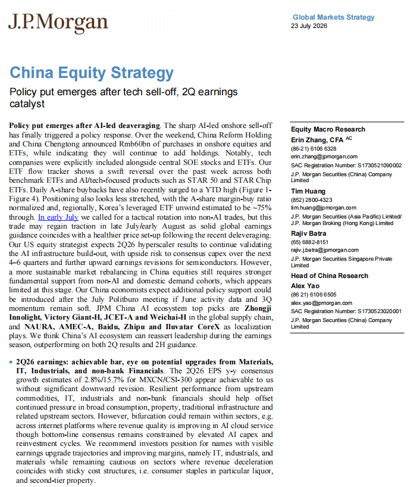
一句话核心 A 股科技股跌太快，国家队 600 亿出手托底（还首次把科技股纳入），这是"政策底"和"技术底"，但不是全面牛市的开始。
背景与关键数据 "政策看跌期权（policy put）"借用金融术语：看跌期权（put）是市场跌到某价位就有人接盘的保护，"policy put"就是"当市场（尤其政策想扶的科技板块）跌太猛时，国家资金出手托底"这一隐性保护。周末中国国新控股 + 中国诚通宣布合计 600 亿元增持股票和 ETF，且首次明确把科技企业纳入——信号强于以往只买央企和宽基。JPM 观察到多项技术面改善：宽基 ETF 资金流逆转、科创芯片 ETF 重获流入、上市公司回购创年内新高、融资买入占比回归正常、韩国杠杆 ETF 去杠杆完成约 75%（去杠杆接近尾声意味着抛压减轻）。
图片解读 配图为 JPM 研报首页，标题"Policy put emerges after tech sell-off, 2Q earnings catalyst"（科技抛售后政策看跌期权浮现，二季度财报是催化剂）。正文列出 JPM 的 AI 生态首选股（中际旭创、胜宏科技、沪电股份等，及 NAURA、AMEC、百度、智谱、寒武纪等本土化标的），并认为二季度业绩（MXCN/CSI-300 EPS 同比约 2.8%/15.7%）"达标无虞"，中国 AI 产业链有望在财报季领跑。
为什么重要 这条是理解当前 A 股逻辑的钥匙：下行有政策底，上行靠结构（AI/科技/龙头）。它和帖14（自由流动性不支持全面牛市）互相印证——两家外资得出相同结论：这是结构性行情，不是雨露均沾的全面牛市。对操作的含义是：政策托底降低了系统性下跌风险，但选股仍要聚焦有政策+产业逻辑的板块。
延伸知识 "Fed put（美联储看跌期权）"是这个词的鼻祖——指市场大跌时美联储会降息/放水救市，投资者因此敢于"逢跌买入"。"policy put"是中国版：救市工具不是利率，而是国家队（汇金、国新、诚通等）直接下场买股票和 ETF。理解"谁在托底、托到什么程度"，是判断政策市风险收益比的关键。但要警惕——政策底不等于市场底，托底能防止踩踏，却不能凭空创造盈利增长。
帖18 · 摩根斯坦利：中国酒店 RevPAR 连降，暑期为近四年最弱 #经济数据#
发布时间：2026-07-23 16:23
帖子原文（转写）
摩根斯坦利：根据酒店数据机构 STR，2026 年 7 月 12 日至 18 日，中国酒店市场显示疲软，RevPAR 连续约四周同比下降 5%—6%，说明 6 月底以来的疲软并非单周偶然波动。2026 年暑期为近四年最弱，这不仅是同比增速问题。即使按 RevPAR 的绝对金额比较，2026 年的住宿收入水平也处于最近四年低位。天气是短期扰动因素，但休闲旅游需求本身也明显偏弱；8 月降幅或收窄，但由于去年基数较高，2026 年下半年 RevPAR 大概率仍同比小幅下降。
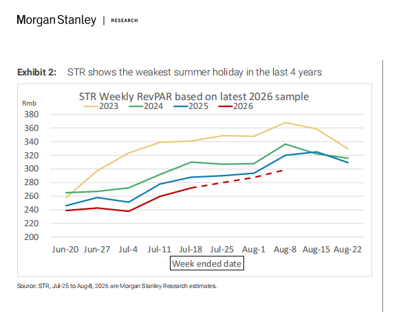
一句话核心 酒店"每间可售房收入"连跌四周、暑期为近四年最弱，是内需疲软的又一高频铁证。
背景与关键数据 "RevPAR"（Revenue per Available Room，每间可售房收入）= 入住率 × 平均房价，是酒店业最核心的景气指标，同时反映"住得满不满"和"卖得贵不贵"。它连续约四周同比降 5–6%，且绝对金额也处近四年低位——说明不是基数问题，是实打实地变弱。摩根斯坦利强调这不是单周偶然，休闲旅游需求本身偏弱，下半年因去年基数高，大概率仍小幅同比下降。
图片解读 图（STR Weekly RevPAR）四条线对应 2023/2024/2025/2026 四年：金色（2023）最高、绿色（2024）次之、蓝色（2025）再次，红色（2026，含虚线预估）最低，且明显落在其他三年下方。横轴是各周（6 月 20 日至 8 月 22 日）。一眼可见 2026 年暑期整体位于四年最底部。
为什么重要 RevPAR 是"活的、高频的"内需温度计，比月度、季度的官方数据更及时。它和帖7（消费税 -5.3%）、帖6（中年失业社保）相互印证——从税收、就业到出行消费，多个高频指标共同指向"内需持续偏弱"。对判断消费复苏和相关板块（酒店、旅游、航空）盈利，这是关键的领先信号。
延伸知识 旅游、酒店、餐饮、电影票房这类"可选消费/服务消费"是观察居民信心的敏感窗口——它们是"想省就能省"的开支，一旦收入预期转弱，最先被砍。所以服务消费的高频数据往往领先于整体消费数据。学会用 RevPAR、票房、客运量等民间高频指标交叉验证官方数据，能更早捕捉经济冷暖的拐点。
帖19 · rabobank：世界从"效率优先"转向"安全优先" #政策分析#
发布时间：2026-07-23 16:38
帖子原文（转写）
rabo bank：全球正在从"效率优先"转向"安全优先"，而传统宏观经济学仍然习惯用价格、通胀和效率来评价政策，因此可能越来越看不懂现实。因此，所谓"价格会上涨"，不再足以否定政策。西方新重商主义并不只是特朗普个人政策，而是对中国经济结构（低价出口）的系统性回应。这一过程早在 2015 年前后就已注定，只是主流媒体此前没有承认——全球化概念里的追求低价已经不再有效。
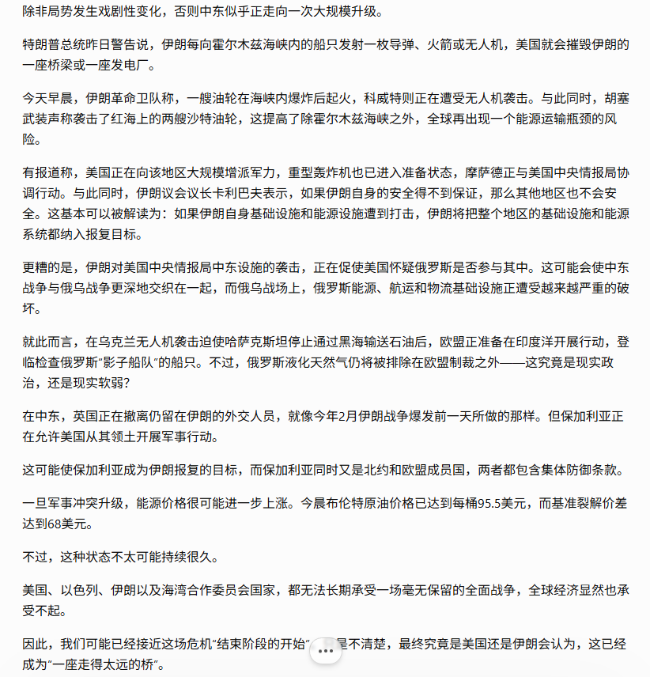
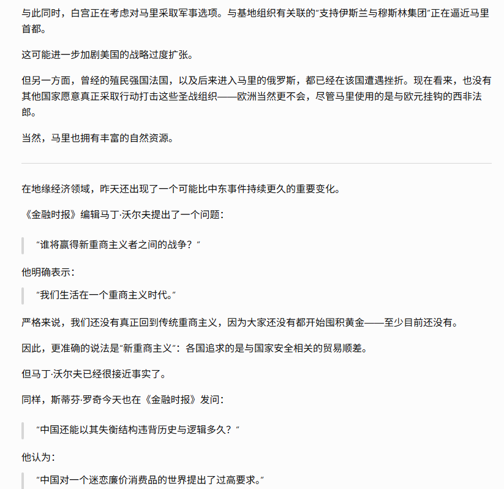
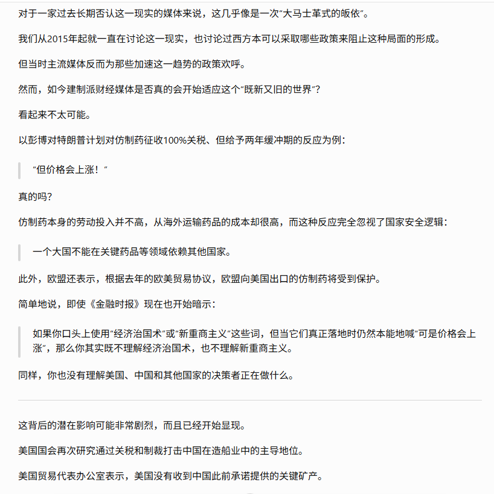
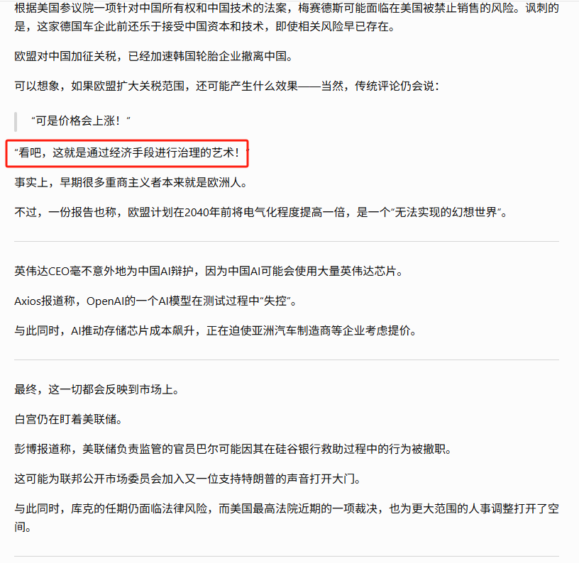
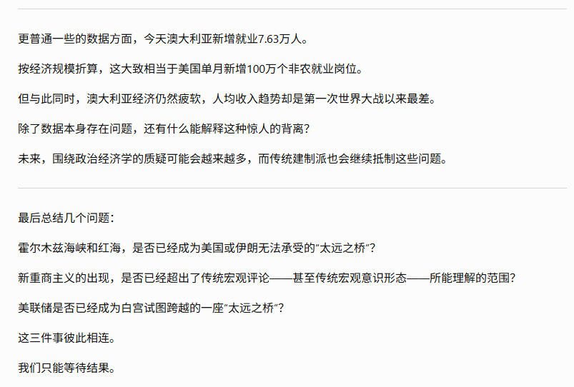
一句话核心 全世界正在把"便宜"让位于"安全"，用老一套"涨价就是坏政策"的经济学，已经越来越看不懂这个新时代。
背景与关键数据 这是今天最具"框架性"的一条。rabobank 提出：过去几十年全球化追求效率优先（哪里便宜在哪里生产、全球采购最低价）；现在转向安全优先（供应链自主、关键产业本土化、盟友化，哪怕更贵也要）。传统宏观经济学的评判标准是"价格、通胀、效率"，所以它会本能地反对关税、本土化（因为会推高价格）——但在"安全优先"范式下，"涨价"不再是否定政策的充分理由。rabobank 还指出"西方新重商主义"不是特朗普个人偏好，而是对"中国低价出口"这一结构的系统性回应，早在 2015 年前后就已注定。
图片解读 五张图为该主题的研报/资料截图（部分呈现了当下的地缘背景与供应链、贸易格局变化），共同服务于一个论点：评价政策的坐标系正在从"效率/价格"切换到"安全/自主"。
为什么重要 这条给今天所有其他帖子提供了一个"总纲"。帖13（美国关税）、帖11（绕开霍尔木兹的能源保险）、乃至各国重建本土产业链，本质都是"安全优先"逻辑的具体表现。它提示投资者：过去 30 年"通缩式全球化"（东西越来越便宜）的时代结束了，取而代之的是"结构性通胀 + 供应链重构 + 阵营化"。这会长期抬高通胀中枢、抬高利率中枢，深刻改变资产定价的底层假设。
延伸知识 "效率 vs 安全"是理解未来十年的核心框架。经济学教科书假设"自由贸易让所有人受益"，前提是世界和平、供应链可靠。但当地缘冲突频发（俄乌、中东、台海风险），各国发现"过度依赖单一来源"是致命弱点（疫情时的口罩、芯片荒、霍尔木兹危机都是教训），于是宁可牺牲一部分效率去换安全。这就是"去全球化/近岸外包/友岸外包"的思想根源——也是通胀可能长期偏高的结构性原因。
帖20 · 联合国：全球人口增长率六十年前就已见顶 #人口#
发布时间：2026-07-23 16:41
帖子原文（转写）
联合国：全球人口增长率在六十年前达到顶峰。
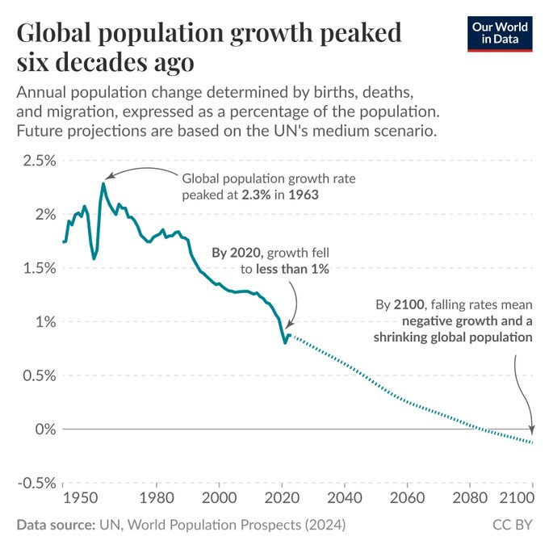
一句话核心 全球人口增长速度在 1963 年（2.3%）就见顶了，2020 年已跌破 1%，到 2100 年将转为负增长、总人口开始萎缩。
背景与关键数据 注意区分"人口增长率见顶"和"人口总数见顶"——现在见顶的是增速（每年增长的百分比），总人口仍在增加，只是增速在放缓。全球人口增长率 1963 年达到 2.3% 的峰值，2020 年跌破 1%，联合国中位情景预测 2100 年前后转为负增长，全球总人口开始下降。
图片解读 图（Our World in Data，数据源联合国 World Population Prospects 2024）横轴 1950–2100，纵轴是年度人口增长率（%）。实线（历史）从 1950 年约 1.8% 冲到 1963 年的 2.3% 峰值，之后波动下行到 2020 年跌破 1%；虚线（预测）继续下滑，到 2100 年前后穿过 0% 进入负值区。三个标注清晰点出三个节点：1963 年 2.3% 见顶、2020 年跌破 1%、2100 年转负。
为什么重要 人口是最慢、最确定、最难逆转的长期变量，被称为"宏观经济的重力"。人口增长放缓乃至萎缩，会从根本上压低长期经济增速、拖累房地产需求（帖10、12 的房价困局有其人口底色）、加重养老和财政负担（帖1 的财政压力、帖6 的社保诉求都与老龄化相关）。Jason 用一句话收尾今天的帖子，实则是给所有短期数据提供了一个"长期地心引力"的注脚。
延伸知识 "人口红利"与"人口负债"是理解长期增长的关键。当劳动年龄人口占比高、抚养负担轻时，经济享受"人口红利"（过去几十年的中国、东亚）；当老龄化加深、劳动力萎缩时，转为"人口负债"（今天的日本、渐进中的中国）。低生育率一旦形成，几乎不可逆——这也是为什么发达国家和中国的长期利率中枢、增长中枢会系统性下移。人口决定"地板"，政策只能决定"在地板之上跳多高"。
今日全图索引
| 帖号 | 时间 | 机构/来源 | 主题 | 标签 | 图片文件 |
|---|---|---|---|---|---|
| 1 | 12:20 | 穆迪 | 中国财政困局与城投债、城市更新 5 万亿 | #TAX# |
post1_img1〜2.png |
| 2 | 14:37 | 巴克莱 | 人民币升值放缓，年底 USDCNY 6.65 | #金融# |
post2_img1〜2.png |
| 3 | 14:43 | 中金 | 公募减持港股，信用周期 K 型分化 | #股市# |
post3_img1.png |
| 4 | 14:53 | 花旗 | 加息定价 30% 实为风险溢价 | #金融# |
post4_img1.png |
| 5 | 15:00 | 财通 | 小行降存款利率≠降息，利率下行是趋势 | #金融# |
post5_img1.png |
| 6 | 15:04 | 网友反馈 | 中年失业后的社保诉求 | #TAX# |
post6_img1.png |
| 7 | 15:08 | 招商 | 消费税跌 5.3%、印花税涨 96.4% | #TAX# |
post7_img1.png |
| 8 | 15:11 | 花旗 | 韩国名义 GDP 上调至 20.7%，半导体涨价 | #其他国家经济# |
post8_img1.png |
| 9 | 15:17 | 华创 | 80% 税收为价格税，PPI 修复助力税收 | #TAX# |
post9_img1.png |
| 10 | 15:27 | 克而瑞 | 东莞人口增量第二但房价跌 40% | #房价# |
post10_img1〜3.png |
| 11 | 15:32 | 汇丰 | 绕开霍尔木兹的万亿能源基建 | #金融# |
post11_img1.png |
| 12 | 15:39 | 国信达 | 租金跑输房价，深圳租售比 1.72% | #房价# |
post12_img1〜3.png |
| 13 | 15:54 | 彭博 | 美国对约 60 经济体加征 10–12.5% 关税 | #其他国家经济# |
post13_img1〜5.png |
| 14 | 15:58 | 摩根斯坦利 | 自由流动性新低，A 股难有全面牛市 | #股市# |
post14_img1.png |
| 15 | 16:07 | zerohedge | 特朗普考虑打伊朗，布伦特破 100 | #金融# |
post15_img1〜8.png |
| 16 | 16:15 | 彭博 | 日元贬至 1986 年最弱，吃掉 Topix 美元回报 | #金融# |
post16_img1〜2.png |
| 17 | 16:18 | 摩根大通 | A 股政策看跌期权，国家队 600 亿增持 | #A股# |
post17_img1.png |
| 18 | 16:23 | 摩根斯坦利 | 酒店 RevPAR 连降，暑期近四年最弱 | #经济数据# |
post18_img1.png |
| 19 | 16:38 | rabobank | 从效率优先转向安全优先 | #政策分析# |
post19_img1〜5.png |
| 20 | 16:41 | 联合国 | 全球人口增长率六十年前见顶 | #人口# |
post20_img1.png |
本报告由自动化任务生成，仅作学习与信息整理之用，不构成任何投资建议。图片版权归原研究机构 / 媒体所有。